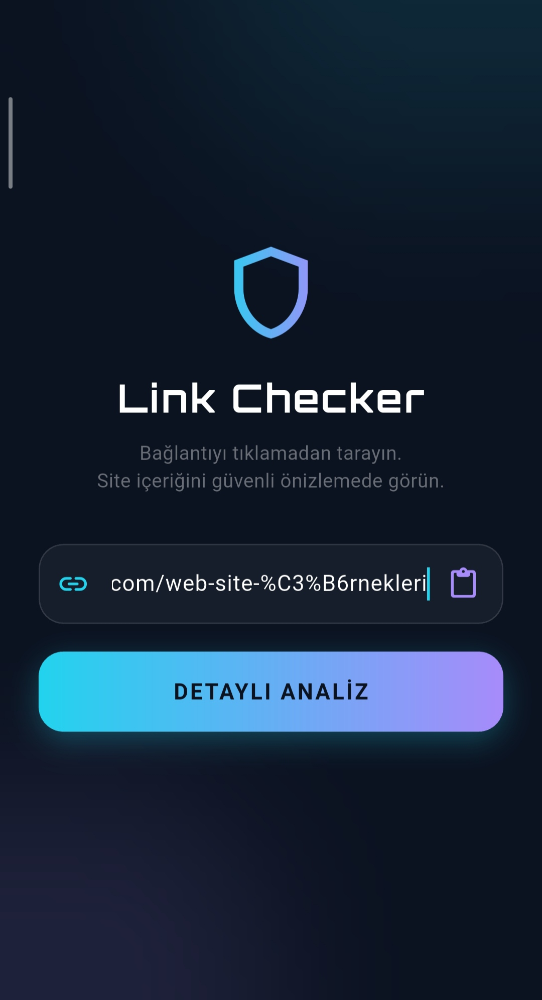
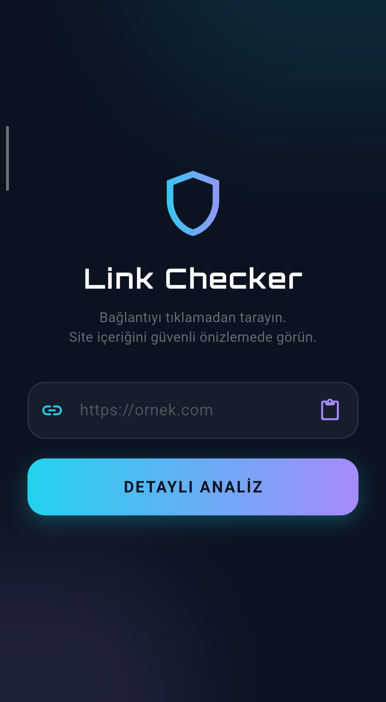
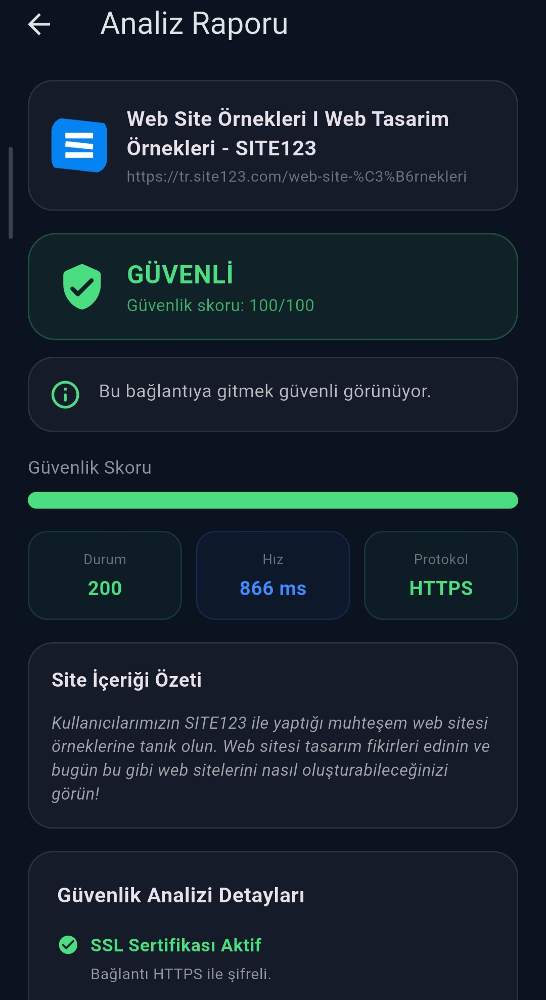
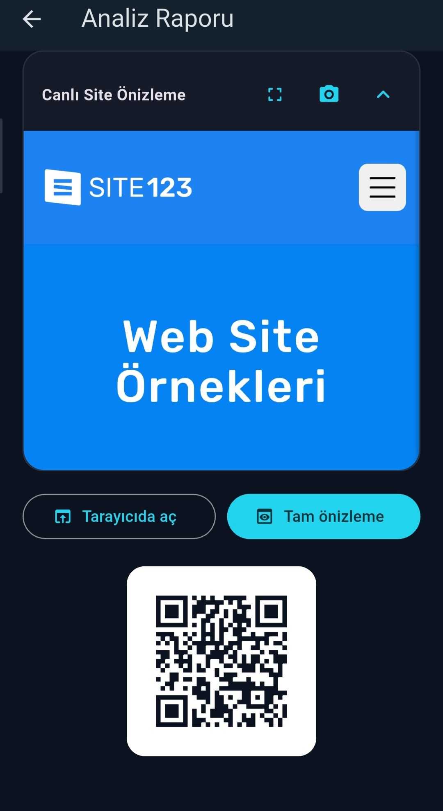

01
Linki yapıştır, analizi başlat
Panodan bağlantıyı yapıştırın veya yazın. DETAYLI ANALİZ ile tarama başlar — tıklamadan önce riski görün.

Link Checker
Şüpheli linkleri yapıştırın, güvenlik skorunu görün ve site içeriğini güvenli önizlemede inceleyin — tarayıcıya gitmeden.

Üç adımda güvenli analiz.
Panodan bağlantıyı yapıştırın veya yazın. DETAYLI ANALİZ ile tarama başlar — tıklamadan önce riski görün.

SSL, domain, yönlendirme ve sayfa taramasına göre skor çıkar. Sonuç GÜVENLİ, ŞÜPHELİ veya TEHLİKELİ olarak net gösterilir.

Siteyi uygulamadan çıkmadan canlı önizleyin. Tehlikeli sayfalarda önizleme uyarı ile açılır — bilinçli karar verin.

Link Checker
Google Play’de Link Checker ile bağlantılarınızı güvenle kontrol edin.
Gizlilik Politikası